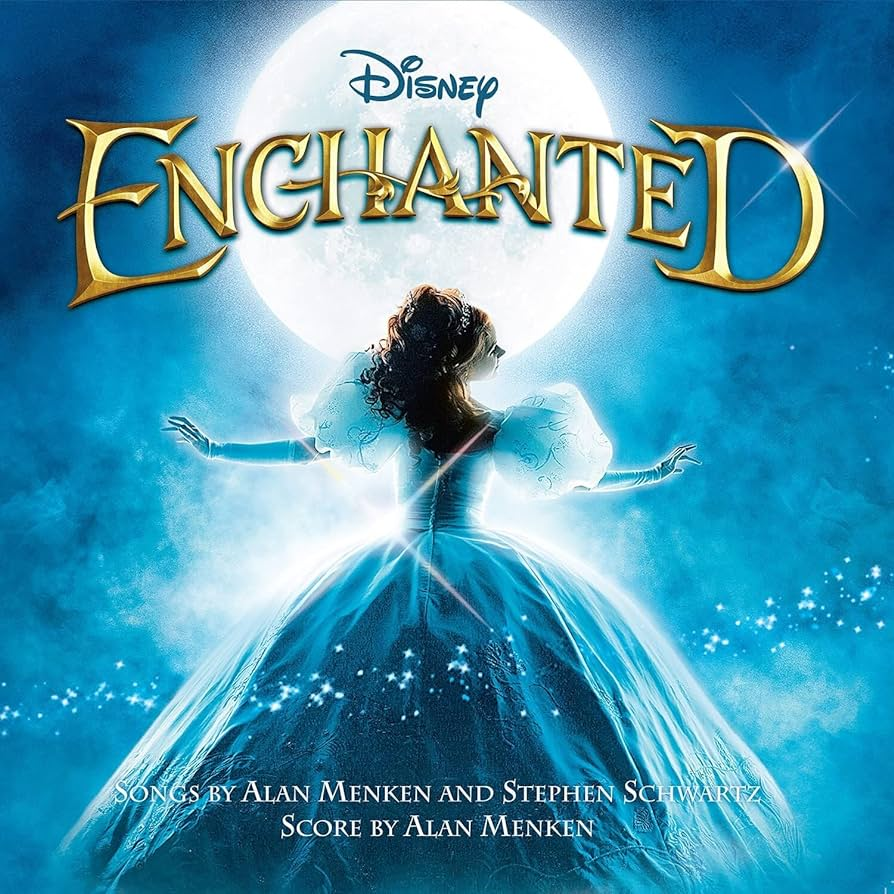

안녕하세요 라보엠입니다.
제가 좋아하는 배우중에 에이미 아담스라는 여자 배우가 있습니다. 레오나르도 디카프리오 주연의 캐치 미 이프 유 캔에서 시골에서 연인으로 출연하며 이름을 알린 그녀는 슈퍼맨 리부트 영화 맨 오브 스틸(2013)에서 로이스 레인 역을 맡기도 했으며, 영화 Her(2013)에도 나왔었고, 영화 컨택트[Arrival](2016)에서 언어학자로 지구에 온 외계인과 소통하는 역할을 하며 인상적인 연기를 했었습니다. 가장 최근에는 마법에 걸린 사랑2(2022)에서 전작에 이어 동화속 안달라시아 왕국에서 뉴욕으로 넘어온 지젤역을 맡았습니다. 2편도 반가웠지만 전작 1편을 너무 재밌게 봐서 오늘은 마법에 걸린 사랑 1편 OST 중 뉴욕 센트럴 파크를 뒤집어 놓았던 노래 That's how you know 를 소개해드리겠습니다.
Enchanted - That's How You Know
Enchanted OST - That's How You Know 가사
How does she know you love her?
How does she know she's yours?
How does she know that you love her?
How do you show her you love her?
How does she know that you really, really, truly love her?
How does she know that you love her?
How do you show her you love her?
How does she know that you really, really, truly love her?
It's not enough to take the one you love for granted
You must remind her or she'll be inclined to say
How do I know he loves me? (How does she know that you love her?)
(How do you show her you love her?)
How do I know he's mine? (How does she know that you really, really truly love her?)
Well, does he leave a little note to tell you
You are on his mind?
Send you yellow flowers when the sky is gray?
Hey
He'll find a new way to show you
A little bit everyday
That's how you know
That's how you know
He's your love
You got to show her you need her
Don't treat her like a mind reader
Each day do something to lead her
To believe you love her
Everybody wants to live happily ever after
Everybody wants to know their true love is true
How do you know he loves you? (How does she know that you love her?)
(How do you show her you love her?)
How do you know he's yours? (How does she know that you really, really truly love her?)
Well, does he take you out dancing
Just so he can hold you close?
Dedicate a song with words
Meant just for you?
Ooh
He'll find his own way to tell you
With the little things he'll do
That's how you know
That's how you know he's your love
He's your love
He's your love
That's how you know he loves you
That's how you know it's true
Because he'll wear your favorite color
Just so he can match your eyes
Plan a private picnic
By the fire's glow
Oh
His heart will be yours forever
Something everyday will show
That's how you know
That's how you know
That's how you know
That's how you know
That's how you know
That's how you know he's your love
That's how she knows that you love her
That's how you show her you love her (that's how you know)
You've got to show her you need her
Don't treat her like a mind reader (that's how you know)
How do you know that you love her?
That's how you know that you love her
It's not enough to take the one you love for granted (he's your love)

에이미 아담스의 영화 마법에 걸린 사랑 볼 수 있는 곳
마법에 걸린 사랑은 디즈니플러스에서 볼 수 있습니다.
마법에 걸린 사랑 시청 | 디즈니+
동화속의 로맨스가 현실 세계에도 이루어질까?
www.disneyplus.com
에이미 아담스의 지적인 면모를 볼 수 있는 컨택트는 쿠팡플레이에서 볼 수 있습니다.
컨택트 (2017) :: 볼 수 있는 곳
12개의 외계 비행 물체(쉘)가 미국, 중국, 러시아를 비롯한 세계 각지 상공에 등장했다. 웨버 대령은 언어학 전문가 루이스 뱅크스 박사와 과학자 이안 도넬리를 통해 외계 비행 물체(쉘) 접촉하
m.kinolights.com
호아킨 피닉스의 이웃집 친구로 출연했던 Her는 넷플릭스에서 볼 수 있습니다.
그녀 (2014) :: 볼 수 있는 곳
줄거리 : 다른 사람의 편지를 대신 써주는 대필 작가 테오도르는 아내와 별거 후 외롭고 공허한 삶을 살고 있다. 어느 날, 스스로 생각하고 느끼는 인공지능 사만다를 만나고 상처를 회복하기 시
m.kinolights.com
레오나르도 다빈치의 시골 연인으로 출연한 캐치 미 이프 유 캔은 넷플릭스에서 볼 수 있습니다.
캐치 미 이프 유 캔 (2003) :: 볼 수 있는 곳
줄거리 : 10대 프랭크는 남을 속이는 천재적인 재능을 발휘하고, FBI 요원 칼 핸러티는 그를 쫓는다. 그러나 프랭크는 교묘히 수사망을 빠져나가며 그 추적을 즐기기 시작한다. 1분 정보 : 미국에
m.kinolights.com